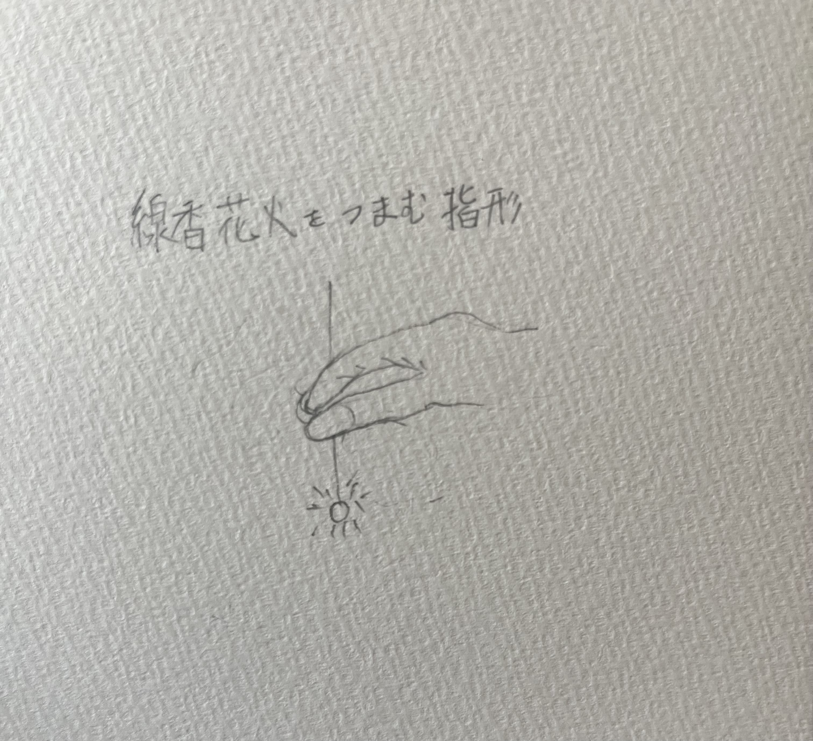
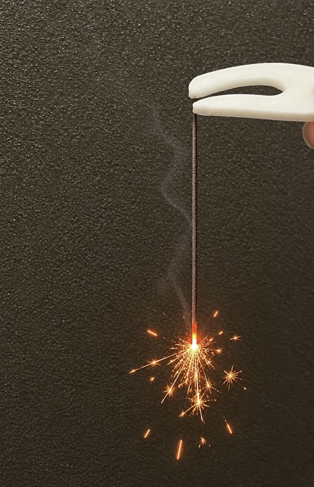
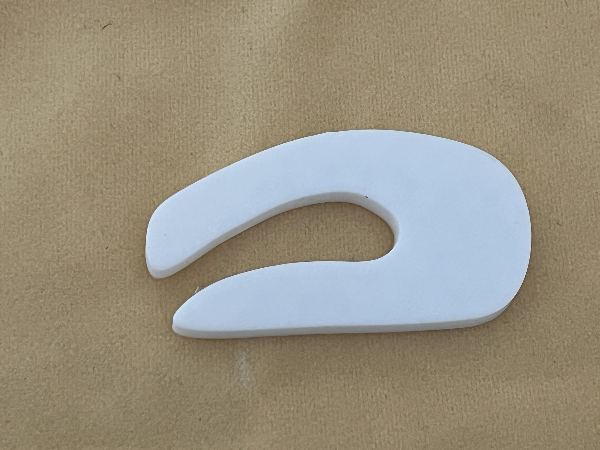
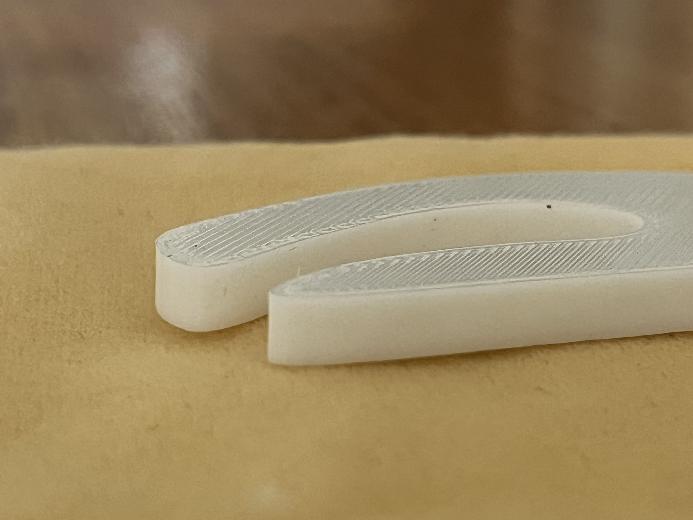
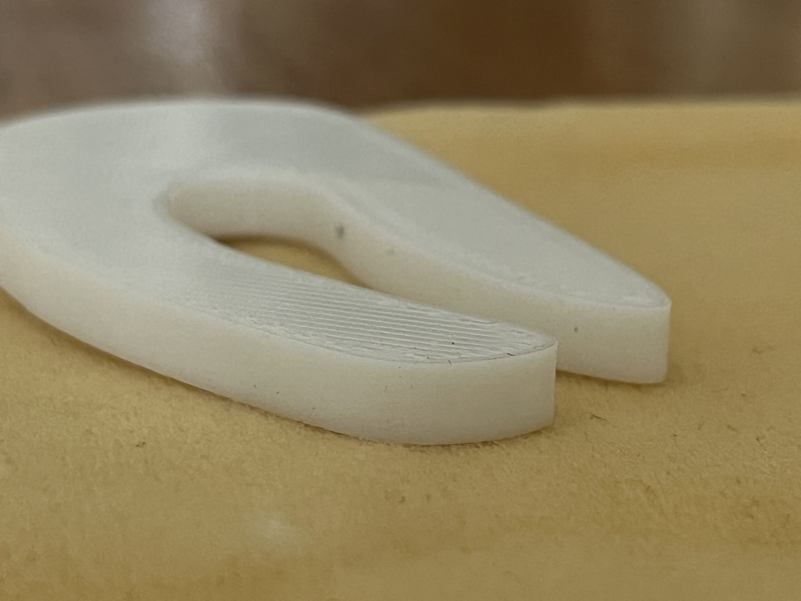
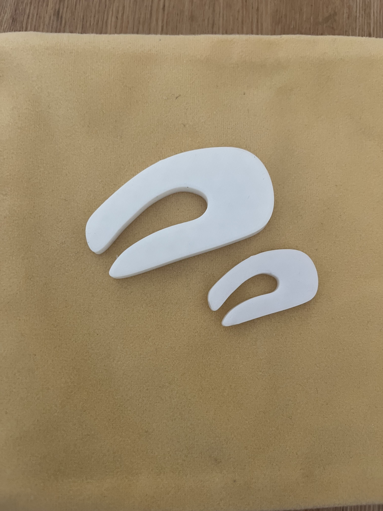
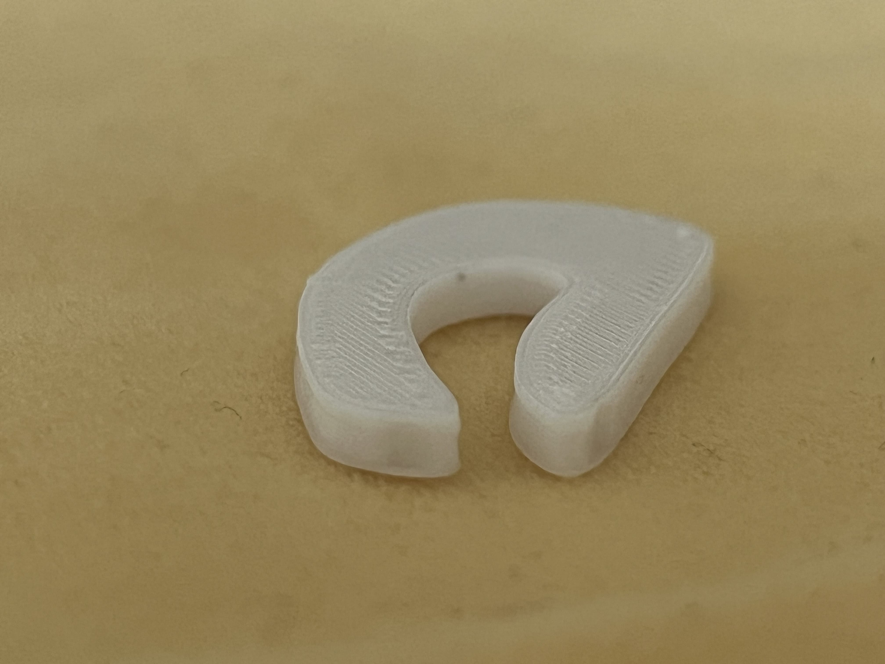

ひとりでも寂しくない線香花火専用ピンセット
完成予想イメージ

線香花火を持つ用のピンセットを作成したいため、ピンセットは指の形状にする。
制作の動機
制作を開始した時期が丁度夏季休暇終わりであり、忙しさから友人と休暇中に花火ができなかったことが心残りだった。 そのため、このピンセットを作れば一人であっても友人と花火をしている気分になれるかなと思い制作を始めた。完成作品

*家に未使用の線香花火がなかったため、花火の部分だけAI生成を使用制作プロセス
試作
stlファイル①


本来であれば爪の部分が押し出しによって窪むはずだったが、指のオブジェクトと爪の面が重なっておらず爪がないままプリントされてしまった。
工夫してみた
（指型のオブジェクトverだとゴチャゴチャしていたため別のオブジェクトで再現） 平面を選択し、形を作る
平面を選択し、形を作る 先ほど作った面を押し出して立体にする。一回ケッチを終了する。
先ほど作った面を押し出して立体にする。一回ケッチを終了する。 作りたい面に新たにスケッチを作成する。この時点では円柱のなかに新しいスケッチが入ってしまっている。
作りたい面に新たにスケッチを作成する。この時点では円柱のなかに新しいスケッチが入ってしまっている。 新しいスケッチを選択したまま二本指でクリックすると選択画面が出るので、移動をクリック。円柱の外までスケッチを移動。
新しいスケッチを選択したまま二本指でクリックすると選択画面が出るので、移動をクリック。円柱の外までスケッチを移動。 移動できたスケッチを選択して、押し出す。
移動できたスケッチを選択して、押し出す。 面を窪ませることができた！！
面を窪ませることができた！！サイズの変更

本来のサイズより大きく作ってしまった場合Fusion指定された大きさを作るより、Curaでサイズを変更したほうが簡単
 オブジェクトを選択して左側の上から２番目を選択。ここで好きな大きさに整える。
オブジェクトを選択して左側の上から２番目を選択。ここで好きな大きさに整える。
 好みの大きさに変更される！！
好みの大きさに変更される！！
これらを踏まえた完成品↓

爪ができた！！大きさも指定通り！！stlファイル②